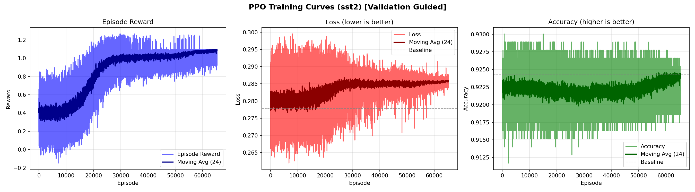
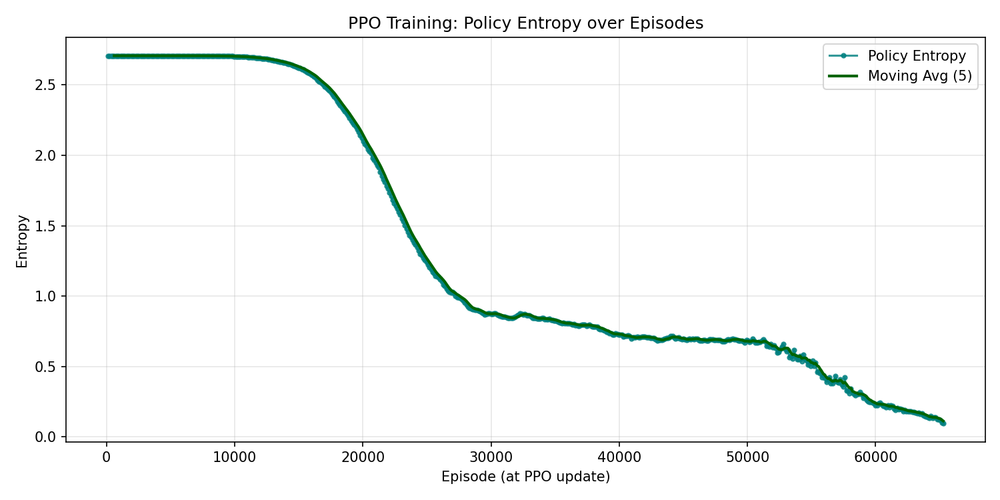

Stage-1 Unbounded Base SST-2 Final Report
Generated 2026-05-29T22:01:59.027331+08:00. This report covers the resumed unbounded Stage-1 entropy run after the legacy 50,000-episode cap was removed.
Statuswaiting_report
Completed episodes65280
Final entropy0.0959
Constraint resultPASS
Best cost26.00
Best reward1.266679
The selected configuration is the checkpoint raw PPO reward-best. No global/search post-selection override was applied.
Run Protocol
| Item | Value |
|---|---|
| Model / dataset | bert-base / sst2 |
| Source sync commit | 73e6a8f |
| Server git HEAD | 7352cd3 (server source was overlay-synced to the source sync commit) |
| Selection protocol | raw_reward_best |
| Stop protocol | entropy_lt_0.1, threshold 0.1000 |
| Episode limit | unbounded_until_entropy, safety cap None |
| Validation protocol | stage1_plaintext_validation_full_only, split validation_full, size 872 |
| Report marker | /hy-tmp/stage1_full_50000_state/report_done_base_sst2_entropy0p1_73e6a8f |
Best Configuration
| Field | Value |
|---|---|
| GELU degrees | [1, 1, 1, 1, 1, 1, 1, 4, 1, 1, 1, 1] |
| Softmax degrees | [2, 2, 2, 2, 2, 2, 2, 2, 2, 2, 2, 2] |
| Cost | 26.0000 |
| Reward | 1.26667900 |
Full Validation Final Eval
| Metric | Baseline original plaintext | Selected config | Delta abs | Delta pct | Constraint | Status |
|---|---|---|---|---|---|---|
| Loss | 0.2818579718 | 0.2803423208 | -0.0015156510 | -0.5377% | 0.2832672616 | pass |
| Metric1 / Accuracy | 0.9243119266 | 0.9231651376 | -0.0011467890 | -0.1241% | 0.9196903670 | pass |
| Metric2 / Accuracy | 0.9243119266 | 0.9231651376 | -0.0011467890 | -0.1241% | 0.9196903670 | pass |
Plaintext Stage-1 Noise Check
Both baseline and selected final eval installed only Stage-1 GELU/Softmax replacements. Stage-2/BLB noise hook counts were zero.
| Eval item | No Stage-2 hooks | Total noise hooks | Hook counts |
|---|---|---|---|
| Baseline | True | 0 | {"block1_noise_layers": 0, "block2_noise_layers": 0, "block3_noise_layers": 0, "block4_noise_layers": 0, "block5_noise_layers": 0, "first_input_noise_layers": 0, "input_noise_layers": 0, "projection_noise_layers": 0, "softmax_value_noise_layers": 0} |
| Selected | True | 0 | {"block1_noise_layers": 0, "block2_noise_layers": 0, "block3_noise_layers": 0, "block4_noise_layers": 0, "block5_noise_layers": 0, "first_input_noise_layers": 0, "input_noise_layers": 0, "projection_noise_layers": 0, "softmax_value_noise_layers": 0} |
Learning Curves


Final Progress Tail
| Episode | Avg reward | Policy loss | Value loss | Entropy |
|---|---|---|---|---|
| 61800 | 1.0790 | -0.1794 | 0.0021 | 0.1970 |
| 61920 | 1.0779 | -0.1620 | 0.0040 | 0.1998 |
| 62040 | 1.0772 | 0.2818 | 0.0146 | 0.1955 |
| 62160 | 1.0821 | 0.3081 | 0.0146 | 0.1834 |
| 62280 | 1.0794 | -0.2273 | 0.0015 | 0.1885 |
| 62400 | 1.0800 | 0.0124 | 0.0015 | 0.1829 |
| 62520 | 1.0822 | -0.0551 | 0.0018 | 0.1809 |
| 62640 | 1.0789 | -0.1883 | 0.0018 | 0.1815 |
| 62760 | 1.0770 | -0.0645 | 0.0024 | 0.1793 |
| 62880 | 1.0834 | -0.1104 | 0.0031 | 0.1765 |
| 63000 | 1.0799 | -0.3668 | 0.0020 | 0.1759 |
| 63120 | 1.0782 | -0.2917 | 0.0019 | 0.1713 |
| 63240 | 1.0788 | 1.3820 | 0.0449 | 0.1650 |
| 63360 | 1.0791 | 0.7610 | 0.0245 | 0.1705 |
| 63480 | 1.0823 | 0.7227 | 0.0283 | 0.1626 |
| 63600 | 1.0801 | -0.3062 | 0.0017 | 0.1658 |
| 63720 | 1.0836 | -0.2444 | 0.0018 | 0.1522 |
| 63840 | 1.0846 | 0.5404 | 0.0138 | 0.1491 |
| 63960 | 1.0850 | -0.1798 | 0.0033 | 0.1438 |
| 64080 | 1.0835 | -0.2185 | 0.0019 | 0.1388 |
| 64200 | 1.0891 | 0.0973 | 0.0037 | 0.1324 |
| 64320 | 1.0801 | -0.2730 | 0.0036 | 0.1480 |
| 64440 | 1.0844 | 0.4044 | 0.0191 | 0.1333 |
| 64560 | 1.0842 | -0.0199 | 0.0047 | 0.1403 |
| 64680 | 1.0849 | -0.2980 | 0.0016 | 0.1371 |
| 64800 | 1.0846 | 0.2766 | 0.0163 | 0.1239 |
| 64920 | 1.0853 | -0.2852 | 0.0013 | 0.1226 |
| 65040 | 1.0823 | -0.2333 | 0.0019 | 0.1190 |
| 65160 | 1.0893 | -0.2533 | 0.0018 | 0.1028 |
| 65280 | 1.0901 | -0.1578 | 0.0029 | 0.0959 |
Four-GPU Rollout Evidence
The final windows show four workers on cuda:0..cuda:3 with 30 episodes each and roughly 3.8x-3.95x window speedups.
[stage1-rollout] window=532 eps_per_worker=30 devices=[cuda:0, cuda:1, cuda:2, cuda:3] counts=[30, 30, 30, 30] wall=105.079s worker_seconds=[100.391, 104.615, 102.643, 105.076] speedup=3.93x [stage1-rollout] window=532 collected 120 episodes across 4 workers [stage1-rollout] window=533 eps_per_worker=30 devices=[cuda:0, cuda:1, cuda:2, cuda:3] counts=[30, 30, 30, 30] wall=109.167s worker_seconds=[99.611, 109.165, 106.396, 104.999] speedup=3.85x [stage1-rollout] window=533 collected 120 episodes across 4 workers [stage1-rollout] window=534 eps_per_worker=30 devices=[cuda:0, cuda:1, cuda:2, cuda:3] counts=[30, 30, 30, 30] wall=106.735s worker_seconds=[98.890, 105.639, 106.734, 106.672] speedup=3.92x [stage1-rollout] window=534 collected 120 episodes across 4 workers [stage1-rollout] window=535 eps_per_worker=30 devices=[cuda:0, cuda:1, cuda:2, cuda:3] counts=[30, 30, 30, 30] wall=106.312s worker_seconds=[101.326, 104.187, 106.310, 105.560] speedup=3.93x [stage1-rollout] window=535 collected 120 episodes across 4 workers [stage1-rollout] window=536 eps_per_worker=30 devices=[cuda:0, cuda:1, cuda:2, cuda:3] counts=[30, 30, 30, 30] wall=108.047s worker_seconds=[100.856, 108.045, 106.497, 104.303] speedup=3.88x [stage1-rollout] window=536 collected 120 episodes across 4 workers [stage1-rollout] window=537 eps_per_worker=30 devices=[cuda:0, cuda:1, cuda:2, cuda:3] counts=[30, 30, 30, 30] wall=104.618s worker_seconds=[96.257, 104.617, 100.210, 103.872] speedup=3.87x [stage1-rollout] window=537 collected 120 episodes across 4 workers [stage1-rollout] window=538 eps_per_worker=30 devices=[cuda:0, cuda:1, cuda:2, cuda:3] counts=[30, 30, 30, 30] wall=108.482s worker_seconds=[101.191, 106.209, 105.779, 108.480] speedup=3.89x [stage1-rollout] window=538 collected 120 episodes across 4 workers [stage1-rollout] window=539 eps_per_worker=30 devices=[cuda:0, cuda:1, cuda:2, cuda:3] counts=[30, 30, 30, 30] wall=108.013s worker_seconds=[103.902, 106.466, 106.316, 108.010] speedup=3.93x [stage1-rollout] window=539 collected 120 episodes across 4 workers [stage1-rollout] window=540 eps_per_worker=30 devices=[cuda:0, cuda:1, cuda:2, cuda:3] counts=[30, 30, 30, 30] wall=107.984s worker_seconds=[100.324, 105.014, 103.721, 107.981] speedup=3.86x [stage1-rollout] window=540 collected 120 episodes across 4 workers [stage1-rollout] window=541 eps_per_worker=30 devices=[cuda:0, cuda:1, cuda:2, cuda:3] counts=[30, 30, 30, 30] wall=107.194s worker_seconds=[100.334, 107.193, 105.355, 99.464] speedup=3.85x [stage1-rollout] window=541 collected 120 episodes across 4 workers [stage1-rollout] window=542 eps_per_worker=30 devices=[cuda:0, cuda:1, cuda:2, cuda:3] counts=[30, 30, 30, 30] wall=105.511s worker_seconds=[98.141, 104.792, 105.508, 103.747] speedup=3.91x [stage1-rollout] window=542 collected 120 episodes across 4 workers [stage1-rollout] window=543 eps_per_worker=30 devices=[cuda:0, cuda:1, cuda:2, cuda:3] counts=[30, 30, 30, 30] wall=110.045s worker_seconds=[103.747, 110.043, 105.780, 103.744] speedup=3.85x [stage1-rollout] window=543 collected 120 episodes across 4 workers
Training Health
| Field | Value |
|---|---|
| Stop marker found | True |
| Final progress | {"avg_reward": 1.0901, "entropy": 0.0959, "episode": 65280, "policy_loss": -0.1578, "value_loss": 0.0029} |
| Progress points captured | 128 |
| Checkpoint mtime | 2026-05-29 21:26:43 +0800 |
Log Tail
Run Log Tail
function） 已替换 1 层的Softmax函数（Softmax function） 已替换 12 层的GELU函数（GELU function） 已替换 11 层的Softmax函数（Softmax function） 已替换 1 层的Softmax函数（Softmax function） 已替换 12 层的GELU函数（GELU function） 已替换 11 层的Softmax函数（Softmax function） 已替换 1 层的Softmax函数（Softmax function） 已替换 12 层的GELU函数（GELU function） 已替换 11 层的Softmax函数（Softmax function） 已替换 1 层的Softmax函数（Softmax function） 已替换 12 层的GELU函数（GELU function） 已替换 11 层的Softmax函数（Softmax function） 已替换 1 层的Softmax函数（Softmax function） 已替换 12 层的GELU函数（GELU function） 已替换 10 层的Softmax函数（Softmax function） 已替换 2 层的Softmax函数（Softmax function） 已替换 12 层的GELU函数（GELU function） 已替换 11 层的Softmax函数（Softmax function） 已替换 1 层的Softmax函数（Softmax function） 已替换 12 层的GELU函数（GELU function） 已替换 11 层的Softmax函数（Softmax function） 已替换 1 层的Softmax函数（Softmax function） 已替换 12 层的GELU函数（GELU function） 已替换 11 层的Softmax函数（Softmax function） 已替换 1 层的Softmax函数（Softmax function） 已替换 12 层的GELU函数（GELU function） 已替换 11 层的Softmax函数（Softmax function） 已替换 1 层的Softmax函数（Softmax function） 已替换 12 层的GELU函数（GELU function） 已替换 11 层的Softmax函数（Softmax function） 已替换 1 层的Softmax函数（Softmax function） 已替换 12 层的GELU函数（GELU function） 已替换 10 层的Softmax函数（Softmax function） 已替换 2 层的Softmax函数（Softmax function） [stage1-rollout] window=543 eps_per_worker=30 devices=[cuda:0, cuda:1, cuda:2, cuda:3] counts=[30, 30, 30, 30] wall=110.045s worker_seconds=[103.747, 110.043, 105.780, 103.744] speedup=3.85x [stage1-rollout] window=543 collected 120 episodes across 4 workers ╭──────────────────────────────────────────────────────────────╮ │ 回合（Episode） 65280 │ │ 平均奖励: 1.0901, 策略损失: -0.1578, 价值损失: 0.0029, 熵: 0.0959 │ │ [GTrXL调度] LR: 0.000020, 熵系数: 0.012000, 更新次数: #544 (normal) │ ╰──────────────────────────────────────────────────────────────╯ [收敛] Stage-1 entropy convergence reached: entropy=0.0959 < threshold=0.1000; stopping at episode 65280. [完成] Stage-1 最终 checkpoint 已保存 → Parting Chapter/persistent/rl/bert-base/sst2/s1t0.005_s2t0.05_s2st0.05/stage1/stage1_rl_checkpoint.pt [迁移] 可迁移 policy/critic 已保存 → Parting Chapter/persistent/rl/bert-base/sst2/s1t0.005_s2t0.05_s2st0.05/stage1/stage1_policy.pt [迁移] 用法：在新任务/新约束下，将 RL_OPT_FLAGS['stage1_pretrained_policy_path'] 设为该路径即可作为 base policy 继续训练。 [检测] 局部最优检测报告 → Parting Chapter/persistent/rl/bert-base/sst2/s1t0.005_s2t0.05_s2st0.05/stage1/pruning_search_log.txt [检测] [OK] best_stuck(13055ep_no_improve) [Stage-1] 最终配置使用原始 PPO reward-best；GELU/Softmax 为确定性替换，不再按 window 二次评估重排。 --- PPO训练完成（PPO Training Completed） --- 已找到最优配置（通过RL）（Best Configuration Found by RL）： GELU配置: [1, 1, 1, 1, 1, 1, 1, 4, 1, 1, 1, 1] Softmax配置: [2, 2, 2, 2, 2, 2, 2, 2, 2, 2, 2, 2] 成本（Cost）: 26.00, 奖励（Reward）: 1.2667 PPO训练曲线已保存至（PPO training curves saved to）: Parting Chapter/persistent/rl/bert-base/sst2/s1t0.005_s2t0.05_s2st0.05/stage1/ppo_training_curve.png PPO熵曲线已保存至（PPO entropy curve saved to）: Parting Chapter/persistent/rl/bert-base/sst2/s1t0.005_s2t0.05_s2st0.05/stage1/ppo_entropy_curve.png ============================================================ 最终评估报告（FINAL EVALUATION REPORT）（验证集） ============================================================ [信息] 第二阶段噪声RL训练已跳过（--skip-noise-rl）。 [信息] 统一最终评估已跳过（--skip-final-eval）。 配置评估完成（Configuration evaluation finished）。 [best_policy] 已复制 Parting Chapter/persistent/rl/bert-base/sst2/s1t0.005_s2t0.05_s2st0.05/stage1/stage1_policy.pt → Parting Chapter/persistent/rl/bert-base/sst2/s1t0.005_s2t0.05_s2st0.05/best_policy/stage1_policy.pt 100%|██████████| 1/1 [3:55:51<00:00, 14151.24s/it] 已替换 11 层的GELU函数（GELU function） 已替换 1 层的GELU函数（GELU function） 已替换 12 层的Softmax函数（Softmax function） Round 0, Final evaluation loss: 0.281857967376709 If there's a warning about missing keys above, please disregard :) NFO ncclCommInitAll comm 0x130f2740 rank 0 nranks 4 cudaDev 0 nvmlDev 0 busId 1000 commId 0xd5ee0fbaaccd0b93 - Init COMPLETE I28ca072f1200a01074:448156:448368 [0] NCCL INFO Init timings - ncclCommInitAll: rank 0 nranks 4 total 0.48 (kernels 0.43, alloc 0.00, bootstrap 0.00, allgathers 0.00, topo 0.03, graphs 0.00, connections 0.02, rest 0.00) I28ca072f1200a01074:448156:448383 [1] NCCL INFO Channel 00 : 1[1] -> 2[2] via SHM/direct/direct I28ca072f1200a01074:448156:448382 [2] NCCL INFO Channel 00 : 2[2] -> 3[3] via SHM/direct/direct I28ca072f1200a01074:448156:448384 [0] NCCL INFO Channel 00 : 0[0] -> 1[1] via SHM/direct/direct I28ca072f1200a01074:448156:448381 [3] NCCL INFO Channel 00 : 3[3] -> 0[0] via SHM/direct/direct I28ca072f1200a01074:448156:448383 [1] NCCL INFO Channel 01 : 1[1] -> 2[2] via SHM/direct/direct I28ca072f1200a01074:448156:448382 [2] NCCL INFO Channel 01 : 2[2] -> 3[3] via SHM/direct/direct I28ca072f1200a01074:448156:448384 [0] NCCL INFO Channel 01 : 0[0] -> 1[1] via SHM/direct/direct I28ca072f1200a01074:448156:448381 [3] NCCL INFO Channel 01 : 3[3] -> 0[0] via SHM/direct/direct I28ca072f1200a01074:448156:448383 [1] NCCL INFO Channel 02 : 1[1] -> 2[2] via SHM/direct/direct I28ca072f1200a01074:448156:448382 [2] NCCL INFO Channel 02 : 2[2] -> 3[3] via SHM/direct/direct I28ca072f1200a01074:448156:448384 [0] NCCL INFO Channel 02 : 0[0] -> 1[1] via SHM/direct/direct I28ca072f1200a01074:448156:448381 [3] NCCL INFO Channel 02 : 3[3] -> 0[0] via SHM/direct/direct I28ca072f1200a01074:448156:448383 [1] NCCL INFO Channel 03 : 1[1] -> 2[2] via SHM/direct/direct I28ca072f1200a01074:448156:448382 [2] NCCL INFO Channel 03 : 2[2] -> 3[3] via SHM/direct/direct I28ca072f1200a01074:448156:448384 [0] NCCL INFO Channel 03 : 0[0] -> 1[1] via SHM/direct/direct I28ca072f1200a01074:448156:448381 [3] NCCL INFO Channel 03 : 3[3] -> 0[0] via SHM/direct/direct I28ca072f1200a01074:448156:448381 [3] NCCL INFO Connected all rings, use ring PXN 0 GDR 1 I28ca072f1200a01074:448156:448382 [2] NCCL INFO Connected all rings, use ring PXN 0 GDR 1 I28ca072f1200a01074:448156:448384 [0] NCCL INFO Connected all rings, use ring PXN 0 GDR 1 I28ca072f1200a01074:448156:448383 [1] NCCL INFO Connected all rings, use ring PXN 0 GDR 1
Master Log Tail
[2026-05-27T19:48:10+08:00] launching large_mrpc preset=bert-large-mrpc-stage1-rl selection=raw_reward_best [2026-05-27T19:48:10+08:00] running large_mrpc pid=207045 run_log=Parting Chapter/persistent/rl/bert-large/mrpc/s1t0.005_s2t0.05_s2st0.05/logs/stage1_full_large_mrpc_50000.log [2026-05-28T00:30:17+08:00] attached to existing large_mrpc pid=207045; waiting for training completion [2026-05-28T00:30:17+08:00] attached to existing large_mrpc pid=207045; waiting for training completion [2026-05-28T11:52:26+08:00] attached to existing large_mrpc pid=207045; waiting for training completion [2026-05-28T23:59:33+08:00] completed large_mrpc; waiting for report marker /hy-tmp/stage1_full_50000_state/report_done_large_mrpc [2026-05-29T00:34:34+08:00] report marker observed for large_mrpc [2026-05-29T00:34:34+08:00] pulling corrected Stage-1 boundary-search reward source before BERT-base reruns [2026-05-29T00:46:34+08:00] source already verified at 7352cd3 via git bundle fallback; skipping HTTPS pull [2026-05-29T00:46:34+08:00] launching base_sst2 preset=bert-base-sst2-stage1-rl selection=raw_reward_best entropy_stop<0.1 marker=/hy-tmp/stage1_full_50000_state/report_done_base_sst2_entropy0p1_7352cd3 differential_reward=off [2026-05-29T00:46:40+08:00] running base_sst2 pid=344583 run_log=Parting Chapter/persistent/rl/bert-base/sst2/s1t0.005_s2t0.05_s2st0.05/logs/stage1_full_base_sst2_entropy0p1.log [2026-05-29T16:02:28+08:00] attached to current base_sst2 pid=344583; will resume unbounded if it exits without entropy marker [2026-05-29T17:30:35+08:00] legacy base_sst2 completed without entropy convergence; resuming from persistent checkpoint on 73e6a8f with no episode cap [2026-05-29T17:30:35+08:00] launching base_sst2 preset=bert-base-sst2-stage1-rl source_sync=73e6a8f entropy_stop<0.1 episodes=unbounded marker=/hy-tmp/stage1_full_50000_state/report_done_base_sst2_entropy0p1_73e6a8f fresh_flag=resume [2026-05-29T17:30:36+08:00] running base_sst2 pid=448156 run_log=Parting Chapter/persistent/rl/bert-base/sst2/s1t0.005_s2t0.05_s2st0.05/logs/stage1_full_base_sst2_entropy0p1.log [2026-05-29T21:26:53+08:00] completed base_sst2 with entropy convergence; waiting for report marker /hy-tmp/stage1_full_50000_state/report_done_base_sst2_entropy0p1_73e6a8f
Artifacts
| Artifact | Path |
|---|---|
| Summary JSON | stage1_base_sst2_unbounded_final_summary.json |
| Final eval JSON | stage1/final_eval_best_vs_baseline.json |
| Checkpoint summary | stage1/base_sst2_checkpoint_summary.json |
| Training health | stage1/base_sst2_training_health.json |